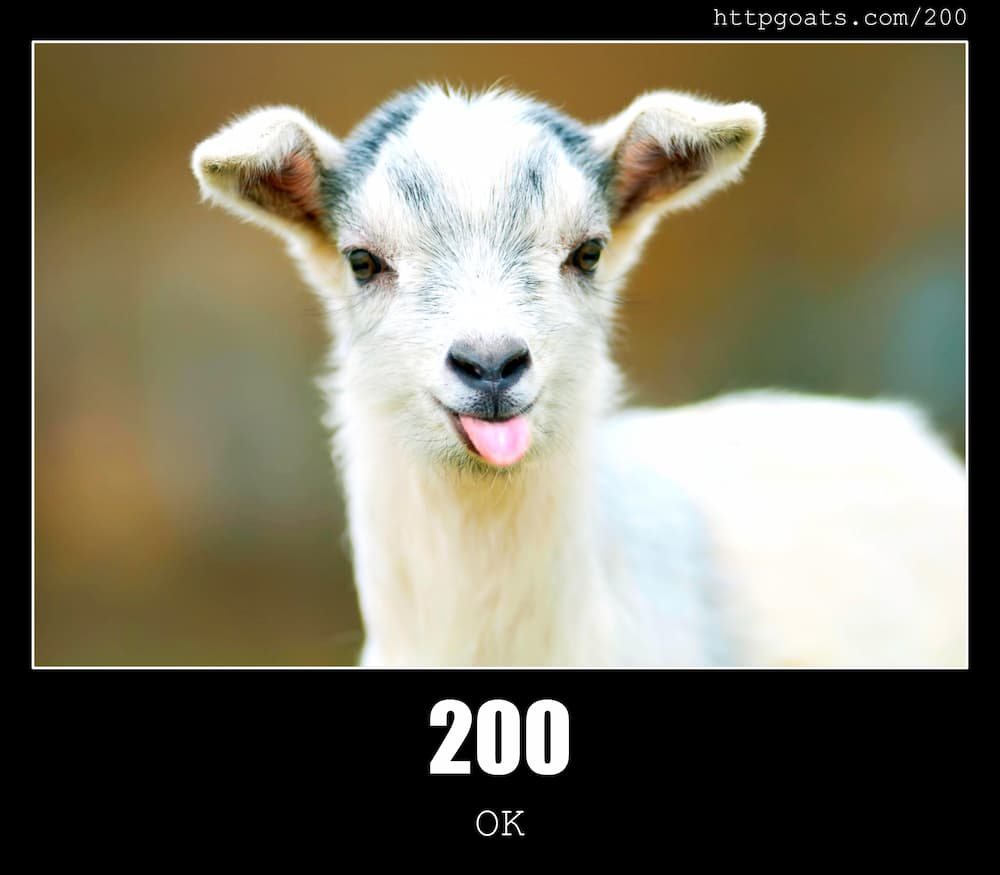

  GNU nano 6.2                       index.html                                 
<!DOCTYPE html>
<html lang="en">
<head>
    <meta charset="UTF-8">
    <title>Mini CDN Home</title>
</head>
<body>
    <h1>Welcome to the Mini CDN!</h1>
    <p>This is a working page served with HTTP 200 OK.</p>
    

    <p>Meet our awesome team members:</p>
    <ul>
        <li><a href="augusto.html">Augusto's page</a></li>
        <li><a href="lena.html">Lena's page</a></li>
        <li><a href="sofia.html">Sofia's page</a></li>
        <li><a href="van.html">Van's page</a></li>
    </ul>
</body>
</html>
